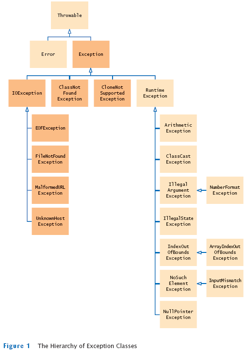

Chapter 15
Exception Handling
Chapter Goals
- To learn how to throw exceptions
- To be able to design your own exception classes
- To understand the difference between checked and unchecked exceptions
- To learn how to catch exceptions
- To know when and where to catch an exception
Error Handling
- Traditional approach: Method returns error code
- Problem: Forget to check for error code
- Failure notification may go undetected
- Problem: Calling method may not be able to do anything about failure
- Program must fail too and let its caller worry about it
- Many method calls would need to be checked
- Instead of programming for success
x.doSomething()
you would always be programming for failure:
if (!x.doSomething()) return false;
Throwing Exceptions
Example
public class BankAccount
{
public void withdraw(double amount)
{
if (amount > balance)
{
IllegalArgumentException exception
= new IllegalArgumentException("Amount exceeds balance");
throw exception;
}
balance = balance - amount;
}
. . .
}
Hierarchy of Exception Classes

Syntax 15.1: Throwing an Exception
Example:
| |
throw new IllegalArgumentException();
|
Purpose:
To throw an exception and transfer control to a handler for this exception type |
Self Check
- How should you modify the deposit method to ensure that the balance is never negative?
- Suppose you construct a new bank account object with a zero balance and then call withdraw(10). What is the value of balance afterwards?
Answers
- Throw an exception if the amount being deposited is less than zero.
- The balance is still zero because the last statement of the withdraw method was never executed.
Checked and Unchecked Exceptions
- Two types of exceptions:
- Checked
- The compiler checks that you don't ignore them
- Due to external circumstances that the programmer cannot prevent
- Majority occur when dealing with input and output
- For example, IOException
- Unchecked:
Checked and Unchecked Exceptions
Checked and Unchecked Exceptions
- Two choices:
- Handle the exception
- Tell compiler that you want method to be terminated when the exception occurs
- Use throws specifier so method can throw a checked exception
public void read(String filename) throws FileNotFoundException
{
FileReader reader = new FileReader(filename);
Scanner in = new Scanner(reader);
. . .
}
- For multiple exceptions:
public void read(String filename)
throws IOException, ClassNotFoundException
- Keep in mind inheritance hierarchy:
If method can throw an IOException and FileNotFoundException, only use IOException
- Better to declare exception than to handle it incompetently
Syntax 15.2: Exception Specification
| |
accessSpecifier returnType methodName(parameterType parameterName, . . .)
throws ExceptionClass, ExceptionClass, . . . |
Example:
| |
public void read(BufferedReader in)
throws IOException |
Purpose:
To indicate the checked exceptions that this method can throw |
Self Check
- Suppose a method calls the FileReader constructor and the read method of the FileReader class, which can throw an IOException. Which throws specification should you use?
- Why is a NullPointerException not a checked exception?
Answers
- The specification throws IOException is sufficient because FileNotFoundException is a subclass of IOException.
- Because programmers should simply check for null pointers instead of trying to handle a NullPointerException.
Catching Exceptions
Catching Exceptions
- Statements in try block are executed
- If no exceptions occur, catch clauses are skipped
- If exception of matching type occurs, execution jumps to catch clause
- If exception of another type occurs, it is thrown until it is caught by another try block
- catch (IOException exception) block
- exception contains reference to the exception object that was thrown
- catch clause can analyze object to find out more details
- exception.printStackTrace(): printout of chain of method calls that lead to exception
Syntax 15.3: General Try Block
| |
try
{
statement
statement
. . .
}
catch (ExceptionClass exceptionObject)
{
statement
statement
. . .
}
catch (ExceptionClass exceptionObject)
{
statement
statement
. . .
}
. . .
|
Example:
| |
try
{
System.out.println("How old are you?");
int age = in.nextInt();
System.out.println("Next year, you'll be " + (age + 1));
}
catch (InputMismatchException exception)
{
exception.printStackTrace();
}
|
Purpose:
To execute one or more statements that may generate exceptions. If an exception occurs
and it matches one of the catch clauses, execute the first one that matches. If no exception
occurs, or an exception is thrown that doesn't match any catch clause, then skip the
catch clauses.
|
Self Check
- Suppose the file with the given file name exists and has no contents. Trace the flow of execution in the try block in this section.
- Is there a difference between catching checked and unchecked exceptions?
Answers
- The FileReader constructor succeeds, and in is constructed. Then the call
in.next() throws a NoSuchElementException, and the try block is aborted. None
of the catch clauses match, so none are executed. If none of the enclosing
method calls catch the exception, the program terminates.
- No–you catch both exception types in the same way, as you can see from the
code example on page 558. Recall that IOException is a checked exception and
NumberFormatException is an unchecked exception.
The finally Clause
The finally Clause
FileReader reader = new FileReader(filename);
try
{
Scanner in = new Scanner(reader);
readData(in);
}
finally
{
reader.close(); // if an exception occurs, finally clause is also
// executed before exception is passed to its handler
}
The finally Clause
- Executed when try block is exited in any of three ways:
- After last statement of try block
- After last statement of catch clause, if this try block caught an exception
- When an exception was thrown in try block and not caught
- Recommendation: don't mix catch and finally clauses in same try block
Syntax 15.4: The finally Clause
| |
try
{
statement
statement
. . .
}
finally
{
statement
statement
. . .
} |
Example:
| |
FileReader reader = new FileReader(filename);
try
{
readData(reader);
}
finally
{
reader.close();
} |
Purpose:
To ensure that the statements in the finally clause are executed whether or not the
statements in the try block throw an exception. |
Self Check
- Why was the reader variable declared outside the try block?
- Suppose the file with the given name does not exist. Trace the flow of execution of the code segment in this section.
Answers
- If it had been declared inside the try block, its scope would only have extended
to the end of the try block, and the catch clause could not have closed it.
- The FileReader constructor throws an exception. The finally clause is executed.
Since reader is null, the call to close is not executed. Next, a catch clause
that matches the FileNotFoundException is located. If none exists, the program
terminates.
Designing Your Own Exception Types
Designing Your Own Exception Types
public class InsufficientFundsException
extends RuntimeException
{
public InsufficientFundsException() {}
public InsufficientFundsException(String message)
{
super(message);
}
}
Self Check
- What is the purpose of the call super(message) in the second InsufficientFundsException constructor?
- Suppose you read bank account data from a file. Contrary to your expectation, the next input value is not of type double. You decide to implement a BadDataException. Which exception class should you extend?
Answers
- To pass the exception message string to the RuntimeException superclass.
- Exception or IOException are both good choices. Because file corruption is
beyond the control of the programmer, this should be a checked exception, so
it would be wrong to extend RuntimeException.
A Complete Example
- Program
- Asks user for name of file
- File expected to contain data values
- First line of file contains total number of values
- Remaining lines contain the data
- Typical input file:
3
1.45
-2.1
0.05
A Complete Example
- What can go wrong?
- File might not exist
- File might have data in wrong format
- Who can detect the faults?
- FileReader constructor will throw an exception when file does not exist
- Methods that process input need to throw exception if they find error in data format
- What exceptions can be thrown?
- FileNotFoundException can be thrown by FileReader constructor
- IOException can be thrown by close method of FileReader
- BadDataException, a custom checked exception class
- Who can remedy the faults that the exceptions report?
- Only the main method of DataSetTester program interacts with user
- Catches exceptions
- Prints appropriate error messages
- Gives user another chance to enter a correct file
File DataSetTester.java
The readFile method of the DataSetReader class
The readData method of the DataSetReader class
- Reads the number of values
- Constructs an array
- Calls readValue for each data value
private void readData(Scanner in) throws BadDataException
{
if (!in.hasNextInt())
throw new BadDataException("Length expected");
int numberOfValues = in.nextInt();
data = new double[numberOfValues];
for (int i = 0; i < numberOfValues; i++)
readValue(in, i);
if (in.hasNext())
throw new BadDataException("End of file expected");
}
- Checks for two potential errors
- File might not start with an integer
- File might have additional data after reading all values
- Makes no attempt to catch any exceptions
The readValue method of the DataSetReader class
private void readValue(Scanner in, int i) throws BadDataException
{
if (!in.hasNextDouble())
throw new BadDataException("Data value expected");
data[i] = in.nextDouble();
}
Scenario
- DataSetTester.main calls DataSetReader.readFile
- readFile calls readData
- readData calls readValue
- readValue doesn't find expected value and throws BadDataException
- readValue has no handler for exception and terminates
- readData has no handler for exception and terminates
- readFile has no handler for exception and terminates after executing finally clause
- DataSetTester.main has handler for BadDataException; handler prints a message, and user is given another chance to enter file name
File DataSetReader.java
Self Check
- Why doesn't the DataSetReader.readFile method catch any exceptions?
- Suppose the user specifies a file that exists and is empty. Trace the flow of execution.
Answers
- It would not be able to do much with them. The DataSetReader class is a reusable class that may be used for systems with different languages and different user interfaces. Thus, it cannot engage in a dialog with the program user.
- DataSetTester.main calls DataSetReader.readFile, which calls readData. The call in.hasNextInt() returns false, and readData throws a BadDataException. The readFile method doesn't catch it, so it propagates back to main, where it is caught.